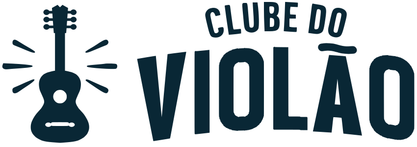
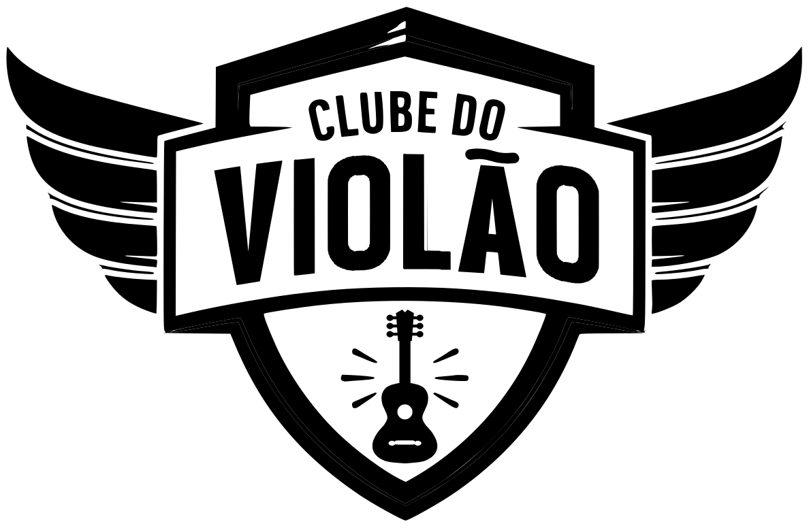

1 · O que é do Clube do Violão
O Clube do Violão é irmão do Clube do Ukulele: mesma escola, mesmo jeito de ensinar, mesma tipografia e os mesmos botões. O que muda é o instrumento e a cor que domina a tela.
No Ukulele, a estrutura é índigo. No Violão, é petróleo, um verde-azulado profundo que puxa para o azul. O coral continua igual nos dois Clubes, porque é a assinatura da casa: é por ele que o aluno percebe que os Clubes vêm do mesmo lugar. O teal de compra, o teal de download, o laranja de oferta e o verde de conclusão têm o mesmo emprego em qualquer Clube.
Este manual traz só o que é diferente. Tipografia, componentes de aula, notação de batida, área de membros e dificuldade seguem o manual do Ukulele, na aba ao lado.
2 · A logo
O escudo com asas é o mesmo do Clube do Ukulele: mesmas asas laranja, mesmo "CLUBE DO", mesmos raios. Mudam a palavra VIOLÃO, desenhada no traço do lettering original, o instrumento no rodapé do escudo, que é um violão de bojo largo com boca e cavalete vazados, e a cor do contorno, que passa a ser petróleo profundo.
As duas formas: o escudo e a horizontal
O escudo é a assinatura principal, na proporção 1,53:1. A horizontal põe o violão com raios ao lado do nome e serve para os lugares baixos e compridos: rodapé de cifra e de material impresso, cabeçalho de documento, assinatura.
As versões de cor




Arquivos em img/logo-violao/, cada versão em SVG e em PNG transparente de 2000px. O LEIA.md de lá diz como a logo foi montada.
Lado a lado com o Ukulele
Regras de proteção
- As mesmas do Ukulele: espaço livre em volta igual à altura do escudo, nada de esticar, girar, recolorir ou pôr sombra.
- Tamanho mínimo do escudo: 2,5 cm em impresso e 96px de largura em tela, para a palavra VIOLÃO continuar legível. Abaixo de uns 160px, a boca e o cavalete do violão somem e fica só a silhueta. Isso é esperado.
- Tamanho mínimo da horizontal: 3 cm em impresso e 120px em tela.
- Versão de uma cor, preta ou branca é só a do pacote em
img/logo-violao/, nunca improvisada com filtro. - Nunca usar o escudo do Ukulele com a cor do Violão, nem o contrário.
3 · A paleta
Só a família da estrutura troca. As cores abaixo substituem o índigo do Ukulele, papel por papel. Cada amostra traz o contraste medido no par em que ela é usada.
Erro, âmbar, vinho e os neutros (fundo #F5F4F7, texto #1F1A2B, superfície, card, linhas) são os do manual do Ukulele, sem mudança.
Por que petróleo azulado, e não um verde-petróleo mais verde: o teal de compra fica a 177° na roda de cores. O petróleo do Violão fica a 232°, longe o bastante para o botão de compra continuar sendo a única coisa verde-azulada viva na tela. Um petróleo mais verde ficaria a 4° do teal, e o aluno deixaria de saber onde se compra.
4 · Os quatro papéis da cor
Os papéis são os mesmos do Ukulele. Muda só quem ocupa o papel de marca.
Marca
Petróleo e coral. O petróleo diz que é o Clube do Violão; o coral diz que é da mesma casa do Ukulele.
Decisão
Teal de ação. O botão que compra, igual em todos os Clubes.
Utilitário e oferta
Teal escuro para baixar e acessar, laranja para anunciar a oferta.
Estado
Verde, âmbar e o vermelho de erro. Falam do que está acontecendo, nunca da marca.
5 · Contraste: a régua
Os pares que mudam no Clube do Violão, todos medidos e aprovados no WCAG AA. Os pares que não aparecem aqui são os mesmos do Ukulele.
| Onde | Par | Contraste | AA |
|---|---|---|---|
| Título e link | #1D5468 / #F5F4F7 | 7,60:1 | passa |
| Botão primário | #FFFFFF / #1D5468 | 8,33:1 | passa |
| Coral sobre fundo escuro | #E87A85 / #092735 | 5,58:1 | passa |
| Botão de compra | #092735 / #12A18A | 4,80:1 | passa |
| Texto branco no fundo escuro | #FFFFFF / #092735 | 15,52:1 | passa |
| Texto secundário no escuro | #D3E3E8 / #092735 | 11,77:1 | passa |
| Destaque leve | #1D5468 / #E2EDF0 | 6,99:1 | passa |
O coral não vira texto sobre o petróleo médio. Sobre #1D5468 ele fica em 3,00:1 e reprova. Coral como texto só sobre o petróleo profundo #092735. Sobre o petróleo médio, coral só como preenchimento (barra, bolinha).
6 · Botões
Os mesmos seis tipos do Ukulele. Primário e secundário passam a ser petróleo; os outros quatro não mudam.
| Botão | Base | Hover | Contraste no hover |
|---|---|---|---|
| Primário | #1D5468 | #184859 | 9,95:1 |
| Decisão de compra | #12A18A | #25A993 | 5,30:1 |
- Texto do botão de compra: petróleo profundo
#092735, nunca branco. Como no Ukulele, ele clareia no hover em vez de escurecer. - Foco por teclado: anel petróleo
#1D5468de 3px com 3px de afastamento. - Utilitário, estado, terciário e desabilitado: iguais ao Ukulele, com os mesmos hex.
7 · Fundos e degradê
As três camadas claras são as mesmas do Ukulele: fundo #F5F4F7, superfície #ECEAF1 e card branco. Os fundos escuros trocam o índigo pelo petróleo.
O degradê vai do petróleo para o petróleo profundo, no mesmo ângulo de 135° do Ukulele. Texto em cima dele é branco ou o sobre-escuro #D3E3E8.
8 · Página de venda
A mesma construção do Ukulele: o botão de compra em teal de ação sobre o bloco escuro, o coral marcando a promessa no título e o laranja só no selo e no preço antigo.
Do zero aos 4 acordes mágicos no violão, sem pestana
Aulas gravadas, curtas e com material de apoio, no mesmo método do Clube do Ukulele.
Texto de exemplo. A promessa final, o preço e a garantia saem do escopo do curso e da página de venda real.
9 · O que vem igual do Ukulele
Estes capítulos do manual do Ukulele valem para o Clube do Violão sem mudança. Onde o exemplo mostra índigo, leia petróleo.
- Tipografia: Anton nos títulos, Montserrat no corpo, Iosevka ou JetBrains Mono nos acordes, entrelinha mínima de 1.12 no Anton com acento.
- Componentes de aula.
- Notação de batida.
- Área de membros.
- Dificuldade e nível: âmbar e vinho continuam sendo só das tags de dificuldade.
Texto para aluno: as regras são as mesmas. "Mão da batida" e "mão dos acordes", nunca direita ou esquerda; dedos por número, de 1 a 4; cifra nunca em caixa alta.
10 · Em resumo
- Mesmo escudo, mesmas asas, mesmo lettering. Mudam a palavra, o instrumento e a cor.
- Petróleo
#1D5468no lugar do índigo#443468, petróleo profundo#092735no lugar do índigo profundo#2D124E. - Coral, teal, laranja, verde, erro, âmbar, vinho e neutros: iguais ao Ukulele.
- Texto do botão de compra em petróleo profundo. Coral como texto só sobre o petróleo profundo.